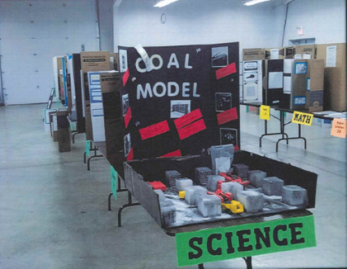

Seven Core Content Areas
Coal Study Units and Student Coal Fair Projects
Our content Areas include:
- Science
- Math
- English/Literature
- Art
- Music
- Technology Multi-Media
- Social Studies
Teacher Activity
Our Coal Study Program provides teachers the opportunity to use their skills in creating, developing and implementing lesson plans about coal in their classroom, in one or more of the core content areas.
These include science, math, English/literature, art,music, technology/multi-media and/or social studies by awarding small grants to help with instructional materials and supply costs related to the Coal Study Unit.
Teachers who are awarded grants for the coal study u its will be asked to submit a one page summary report and photo album upon completion of the coal study unit describing the impact the unit had on his/her students.
All coal study units will be evaluated at the CEDAR Indiana Coal Fair for effectiveness based on the summary report and the photo album submitted with additional cash prizes awarder to the most effective coal study units.
Student Activity
Students are encouraged to participate in the Coal Fair event by entering a project that demonstrates the knowledge and/or talents gained from the Cola Study Units.
Coal Fair Projects may be entered in the 7 core subject areas:
Science, Math, English/Literature, Art, Music, Technology/Multi-Media and Social Studies.
Student Projects will be judged by both subject area and grade level. The best student projects will be awarded Cash Prizes by subject and grade level as well.
Coal Days
Our Coal Days is an opportunity that allow participants (mostly elementary and high school students) to learn more about the coal industry and coal mining through many different ways.
On Coal Days Participants have the opportunity to interact with members of the Indiana coal industry firsthand to ask questions and learn more about the fuel that provides over half of Indiana's electricity.
Participants will also be able to see demonstrations of equipment, disscusions with coal industry personnel, examine displays, and gain support from members of the coal industry all in order to help students experience hands on activities in the underground mine as well as presentations and a continuous miner simulator to help students witness coal extraction in a simulated setting.